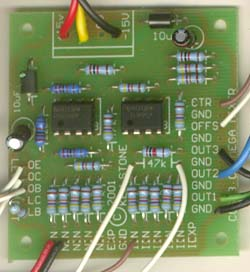

|
C.V. Mega Mixer for music synthesizers. This module is an enhanced version of the D.C. mixer designed for both audio and CV mixing. It has both non-inverting (adding) and inverting (subtracting) inputs, as well as a master level control. It also features two inverting outputs, one (out2) that is offset by the master level control, and the other (out3) which has independent offset and center inputs. How to use this module: Some ideas: Feed it several control voltage sources, for example from a bank of Psycho LFOs. Use the non-inverting output to control one VCA, and the offset inverting output (out2) to drive a second VCA, giving a pseudo random panning effect, the overall output level of which can be controlled by the master level control. Use it to mix multiple synth level audio signals. Use it to subtract one envelope shape from another. A little on how it works:
The schematic of the C.V. Mega Mixer. Only two input pots are shown as examples. The core of the circuit is quite conventional, using two op-amps in a unity gain inverting configuration. The first stage mixes the signals from the six inputs, one of which is an expansion input and requires the use of external resistors. The output signal from this op-amp is then sent to the second stage where it is mixed with six more inputs, the inverting inputs, again one of which is an expansion input and requires the use of external resistors. The feedback resistor in this stage is variable, one half of a dual pot, allowing the output level to be controlled. The normal output (out1) is taken from the output of this op-amp via a 1k resistor. This signal is also fed to two more inverting stages. The first again an op-amp in a unity gain inverting configuration. This time, an offset voltage is mixed with the incoming signal, the offset voltage being derived from the second section of the output level pot in such a way that the offset is reduced as the output level is reduced. When the output level is zero, the offset will also be zero. The second inverting stage has no inbuilt offset and will reflect around the 0 volt line, though has two inputs so that the reflection point can be varied, one inverting (offset), and the other non-inverting (center).
Construction
Please note, an earlier version of the PCB was accidently sent to the etchers. It is functionally fine if you make a small modification. The connections on the PCB marked LC and LB should have a 47k resistor installed between them. The resistor in the feedback path of the second op-amp should be omitted, instead, this is where the pot connections for LC and LB should go. See the second overlay above.  Before you start assembly, check the board for etching faults. Look for any shorts between tracks, or open circuits due to over etching. Take this opportunity to sand the edges of the board if needed, removing any splinters or rough edges. When you are happy with the printed circuit board, construction can proceed as normal, starting with the resistors first, followed by the IC sockets if used, then moving onto the taller components. Take particular care with the orientation of the polarized components, the electrolytics and ICs. When inserting the ICs in their sockets, take care not to accidentally bend any of the pins under the chip. Also, make sure the notch on the chip is aligned with the notch marked on the PCB overlay. If you wish to have more than five inverting or non inverting inputs, extra 47k resistors will be required, each running between the extra input jacks or level pots and the EXP (non-inverting) or IEXP (inverting) pads on the PCB. PCB connections and their descriptions
Notes:
Parts list This is a guide only. Parts needed will vary with individual constructor's needs. Of you want to make this project, you will need to make your own PCB. The artwork is available below. Print at 300dpi.
Can't find the parts? See the parts FAQ to see if I've already answered the question. Also see the CGS Synth discussion group.
Article, art & design copyright 2001 by Ken Stone
| ||||||||||||||||||||||||||||||||||